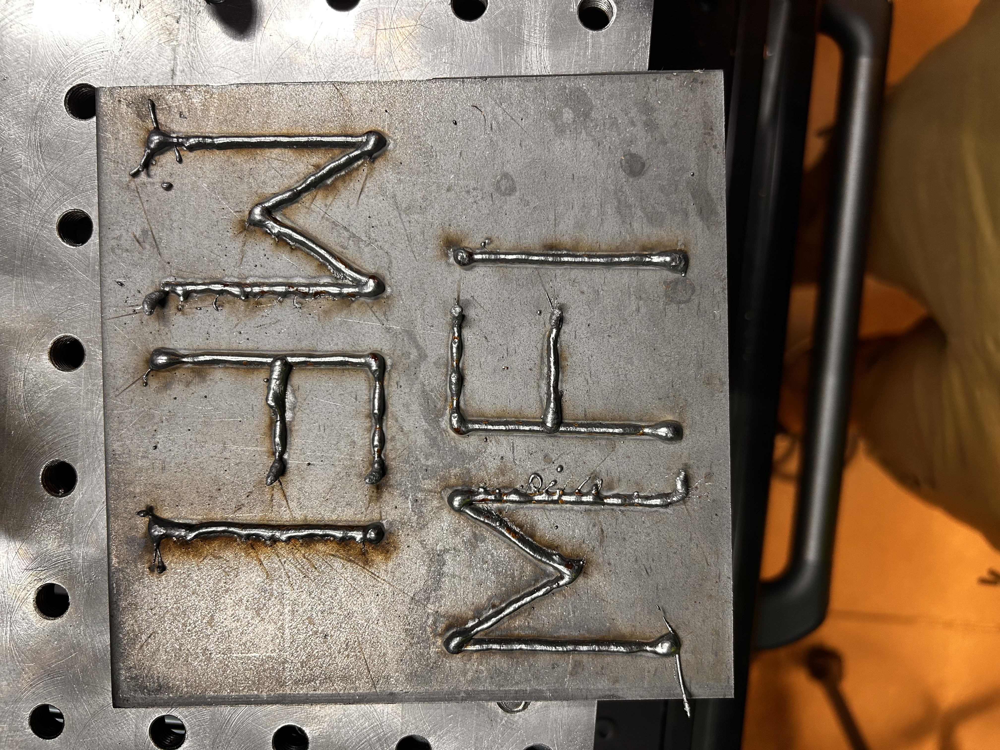
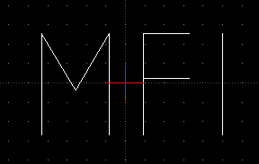
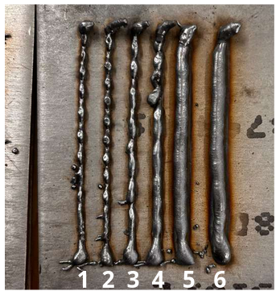

Tutorial 1 - DXF Trajectory Execution with Laser & Welding Integration
The dxf_script.py is a complete script to perform laser welding using a dxf. The .dxf file must be contained within the workspace bounds (600mm x 800mm). The script also has functionality to scale and center the dxf to parse (x,y) coordinates for robot poses. The script is written using only ROS services to control peripherals. The code is explained below:
This tutorial walks through loading a DXF file, parsing it into robot poses, and executing a Cartesian welding trajectory using ROS1. Laser and weld control are also integrated via services.

1. Prerequisites
Install required Python packages:
pip install ezdxf numpy
Ensure the following ROS services are available and active:
/real/fc_set_pose/real/fc_execute_cartesian_trajectory_async/weld_start,/weld_end/laser_emit_start,/laser_emit_stop/laser_ready_arm,/laser_disarm/set_io_value
2. Load and Parse the DXF File

import ezdxf
from geometry_msgs.msg import PoseStamped
DXF_FILE_PATH = "/root/ros1_ws/src/le_classmate_ros/data/MFI8.dxf"
FIXED_Z = 0.405
FIXED_QUAT = (0.707, 0, 0.707, 0)
def parse_dxf_to_poses(dxf_file) -> list:
doc = ezdxf.readfile(dxf_file)
msp = doc.modelspace()
poses = []
for line in msp.query("LINE"):
for pt in [line.dxf.start, line.dxf.end]:
pose = PoseStamped()
pose.pose.position.x = pt[0]
pose.pose.position.y = pt[1]
pose.pose.position.z = FIXED_Z
pose.pose.orientation.x, pose.pose.orientation.y, pose.pose.orientation.z, pose.pose.orientation.w = FIXED_QUAT
poses.append(pose)
return poses
This function reads a DXF file and extracts LINE entities, converting them into 3D ROS poses with a fixed height and orientation.
3. Center and Scale the Path
import numpy as np
def transform_to_centre(center_x, center_y, poses, scale):
delta_x = center_x - 0.53
delta_y = center_y - 0.01
transform_matrix = np.array([[1, 0, 0, -delta_x], [0, 1, 0, -delta_y], [0, 0, 1, 0], [0, 0, 0, 1]])
for pose in poses:
p = [pose.pose.position.x, pose.pose.position.y, pose.pose.position.z, 1]
p_new = np.dot(transform_matrix, p)
pose.pose.position.x = p_new[0] * scale
pose.pose.position.y = p_new[1] * scale
return poses
This function recenters the poses around a fixed workspace origin and scales them to fit the robot’s reach.
4. Monitor Tool Pose and Trigger IO
import math
def calculate_pose_error(pose1, pose2):
dx = pose1.pose.position.x - pose2.pose.position.x
dy = pose1.pose.position.y - pose2.pose.position.y
dz = pose1.pose.position.z - pose2.pose.position.z
return math.sqrt(dx**2 + dy**2 + dz**2), 0.0 # Orientation skipped for simplicity
def monitor_pose_callback(msg, targets):
for i, (idx, target_pose, action) in enumerate(targets):
if idx in found_targets: continue
prev_ok = (i == 0) or (targets[i-1][0] in found_targets)
error, _ = calculate_pose_error(msg, target_pose)
if error < 0.001 and prev_ok:
found_targets.add(idx)
LaserOn(True) if action == "on" else LaserOff(True)
weldOn(True) if action == "on" else weldOff(True)
The monitor_pose_callback is a subscriber callback that triggers welding and laser IO actions when the robot’s pose reaches specified targets within tolerance.
5. Initialize ROS Node and Services
import rospy
from fc_msgs.srv import ExecuteCartesianTrajectory, SetPose, SetIO
from le_classmate_ros.srv import LaserEmit, Weld, LaserArm
from geometry_msgs.msg import PoseStamped
import comet_rpc as rpc
import time
rospy.init_node('dxf_trajectory')
# Wait for required services
rospy.wait_for_service('/real/fc_set_pose')
rospy.wait_for_service('/real/fc_execute_cartesian_trajectory_async')
rospy.wait_for_service('/weld_start')
rospy.wait_for_service('/weld_end')
rospy.wait_for_service('/laser_emit_start')
rospy.wait_for_service('/laser_emit_stop')
rospy.wait_for_service('/set_io_value')
rospy.wait_for_service('/laser_ready_arm')
rospy.wait_for_service('/laser_disarm')
rospy.wait_for_service('/set_override')
# Create service proxies
set_pose = rospy.ServiceProxy('/real/fc_set_pose', SetPose)
execTraj = rospy.ServiceProxy('/real/fc_execute_cartesian_trajectory_async', ExecuteCartesianTrajectory)
weldOn = rospy.ServiceProxy('/weld_start', Weld)
weldOff = rospy.ServiceProxy('/weld_end', Weld)
LaserOn = rospy.ServiceProxy('/laser_emit_start', LaserEmit)
LaserOff = rospy.ServiceProxy('/laser_emit_stop', LaserEmit)
Set_IO = rospy.ServiceProxy('/set_io_value', SetIO)
Laser_Arm = rospy.ServiceProxy('/laser_ready_arm', LaserArm)
Laser_Disarm = rospy.ServiceProxy('/laser_disarm', LaserArm)
set_override = rospy.ServiceProxy('/set_override', Trigger)
This block initializes your ROS node and service clients needed to control the welding process.
6. Setup Monitoring, Execute Trajectory
poses = parse_dxf_to_poses(DXF_FILE_PATH)
found_targets = set()
# Save poses to file for debugging
with open('/root/ros1_ws/src/le_classmate_ros/data/poses.txt', 'w') as f:
for i, p in enumerate(poses):
f.write(f"{i} - {p.pose.position.x}, {p.pose.position.y}, {p.pose.position.z}\n")
# Monitor only certain indices
to_monitor_off_indices = [4,7,9]
to_monitor_on_indices = [5,8,10]
combined_targets = [(i, poses[i], "off") for i in to_monitor_off_indices] + [(i, poses[i], "on") for i in to_monitor_on_indices]
combined_targets.sort()
rospy.Subscriber('/real/tool0_pose', PoseStamped, monitor_pose_callback, callback_args=(combined_targets,))
This section selects key trajectory points to monitor and binds them to the callback for IO control.
7. Begin Motion Execution
# Move to starting pose
set_pose(poses[0].pose, '/base_link', 0.3, 0.1, 'PTP')
# Setup welding systems
set_override(100) # Ensure override is set to 100
Set_IO('Digital_OUT', 47, 1)
Laser_Arm(True)
time.sleep(2)
LaserOn(True)
weldOn(True)
# Execute trajectory
execTraj([p.pose for p in poses], 0.01, 0.0, 0.01, 0.01, 0.0)
# Shut down
weldOff(True)
set_pose(poses[-1].pose, '/base_link', 0.3, 0.1, 'PTP')
LaserOff(True)
Laser_Disarm(True)
Finally, the robot moves through the full trajectory, with laser/weld triggered as it hits waypoints. After execution, the system is shut down cleanly.
Summary
Parse DXF into
PoseStampedwaypointsScale/center into workspace
Monitor robot motion and trigger actions using
SubscriberExecute path with real-time IO via
ServiceProxy
This pattern can be reused for painting, welding, inspection, and more.
Tutorial 2 - ROS Welding Routine Explained
This Python script performs a simple two-pass laser welding operation using predefined poses and ROS service calls. Below is a breakdown of the key parts of the code.

1. Imports and Constants
import rospy
import ezdxf
import tf
import math
import numpy as np
from geometry_msgs.msg import Pose, PoseStamped
from fc_msgs.srv import ExecuteCartesianTrajectory, SetPose
from ezdxf.math import BoundingBox2d, Vec2
import comet_rpc as rpc
import time
from le_classmate_ros.Welding import Welder
from le_classmate_ros.srv import LaserArm, LaserEmit, Weld, SetIO
from std_srvs.srv import Trigger
These import necessary libraries for ROS control, DXF processing, math, and I/O. The services and message types are specific to a laser welding robot setup.
2. Fixed Parameters and Pose Definitions
FIXED_Z_1 = 0.403
FIXED_Z_2 = 0.405
FIXED_QUAT = (-0.707, 0 , -0.707, 0)
FIXED_Y = 0.02
We define fixed heights and orientations for the welding tool. Then we create 4 poses: two for the first weld path, and two for the second (slightly offset in Z).
PointA_1 = PoseStamped()
PointA_1.pose.position.x, PointA_1.pose.position.y, PointA_1.pose.position.z = 0.51, FIXED_Y, FIXED_Z_1
PointA_1.pose.orientation.x, PointA_1.pose.orientation.y, PointA_1.pose.orientation.z, PointA_1.pose.orientation.w = FIXED_QUAT
This is repeated similarly for PointB_1, PointA_2, PointB_2.
3. Main Execution Block
if __name__ == '__main__':
rospy.init_node('dxf_trajectory')
We initialize the ROS node and wait for all required services to be available.
4. Service Clients Setup
set_pose = rospy.ServiceProxy('/real/fc_set_pose', SetPose)
execTraj = rospy.ServiceProxy('/real/fc_execute_cartesian_trajectory_async', ExecuteCartesianTrajectory)
...
These are the clients used to command robot motion, welding, and laser behavior.
5. Enabling welding
set_override(100) # Set override to 100
Set_IO('Digital_OUT', 47, 1) # Enable external control
We set the necessary flags to enable external control and welding.
6. Welding Routine
First Pass:
set_pose(PointA_1.pose, '/base_link', 0.01, 0.1, 'PTP')
Laser_Arm(True)
time.sleep(2)
LaserOn(True)
weldOn(True)
set_pose(PointB_1.pose, '/base_link', 0.0075, 0.1, 'PTP')
weldOff(True)
LaserOff(True)
We move to start position, arm the laser, begin welding, move to the end point, and stop.
Second Pass:
set_pose(PointA_2.pose, '/base_link', 0.01, 0.1, 'PTP')
LaserOn(True)
weldOn(True)
set_pose(PointB_2.pose, '/base_link', 0.001, 0.1, 'PTP')
weldOff(True)
set_pose(PointB_2.pose, '/base_link', 0.3, 0.1, 'PTP') # Move away
LaserOff(True)
Laser_Disarm(True)
Same as the first pass, but slightly higher in Z (a “second layer” weld).
7. Summary
This code executes a controlled laser weld routine along two horizontal lines using ROS services. Each phase—arming, emitting, welding, and disarming—is explicitly timed and ordered.
To extend this:
Add more poses to trace complex geometries.
Convert DXF lines to pose sequences.
Add feedback/error handling for real deployments.
Tutorial 3 - Using the Welder Class Without ROS
The Welding.Welder class can be used directly in standalone Python scripts to control welding I/O over RPC (comet_rpc):
from fanuc_ros1.le_classmate_ros.src.Welding import Welder
import comet_rpc as rpc
import time
'''
def vmip_writeva(
server: str, prog_name: str, var_name: str, value: t.Union[str, int, float]
) -> VmIpWriteVaResponse:
"""Write 'value' to the variable 'var_name' in program 'prog_name'.
Set `prog_name` to `"*SYSTEM*"` to write to system variables.
`value` will always be submitted as a string, even for (system) variables
which are of a different type. `COMET` apparently tries to parse the
string representation and converts it to the required type when possible.
The string representations are expected to be identical to those found in
`.VA` files.
OVERRIDE is a system variable which can be set to a value between 0 and 100. It needs to be set to 100 to allow welding and movement.
the prog_name is "*SYSTEM*" as override is a system variable
THIS MUST BE DONE BEFORE EVERY PROGRAM RUN TO ENSURE THAT OVERRIDE IS SET TO 100. NOT DOING SO WILL RESULT IN AN ERROR WHEN TRYING TO START WELDING.
The override value is set to 100 in the constructor of the Welder class, however, it still may need to be set again here.
Best practice is to always set it in every program.
'''
if __name__ == '__main__':
# Setting up the server
server = '192.168.2.151'
welder = Welder(server=server)
# Setting overwrite to 100 - refer to the docstring of vmip_writeva above for more information
rpc.vmip_writeva(server, "*SYSTEM*", "$MCR.$GENOVERRIDE", value=100)
# Enabling external control - i/o value that control the external control must be set to 1
rpc.iovalset(server, rpc.IoType.DigitalOut, index=47, value=1)
# Arming the Laser
welder.laser_ready_arm()
# Starting Laser Emission
welder.laser_start_emit()
# Starting welding (robot must be in motion when this state is active)
welder.weld_start()
# Move the robot here using your preferred method
# Stopping welding
welder.weld_end()
# Stopping Laser Emission
welder.laser_stop_emit()
# Disarming the Laser
welder.laser_disarm()
The class handles all relevant I/O mappings and safety interlocks. An example is shown in scripts/welder_class_example.py